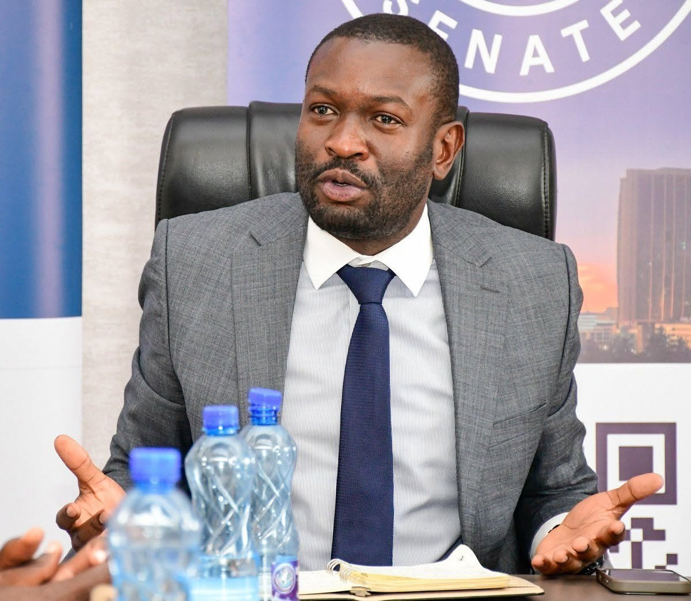

The rise of Edwin Sifuna: from ODM secretary-general to opposition presidential contender
News
Edwin Sifuna, a lawyer, was named secretary-general of the Orange Democratic Movement (ODM) on 23 February 2018, replacing Ababu Namwamba. In August 2022 he won the Nairobi Senate seat, defeating Bishop Margaret Wanjiru.
His profile grew most after the death of ODM leader Raila Odinga and ODM's cooperation deal with President William Ruto's government. Sifuna became the face of resistance inside the party by openly criticising the agreement with the government and insisting ODM should remain a full opposition party. nation
That stance cost him his party post. The Registrar of Political Parties approved his removal as secretary-general, saying it followed the Political Parties Act and ODM's constitution. One account lists his time in the post as running until 9 July 2026.
Outside the party, support was already forming. Linda Mwananchi leaders from Western Kenya announced plans for a new party and said they would put Sifuna forward for president. The Linda Mwananchi Movement later endorsed him as its presidential candidate after a retreat attended by several senior figures.
The movement has faced legal hurdles. The Political Parties Disputes Tribunal set aside the Registrar's August 7 refusal to reserve the name, and in a letter dated October 1, 2026 the Registrar approved the application. The name is reserved for 90 days, and the movement must use that window to become an actual political organisation. Rival applications for similar names have also emerged.
This week he has also taken on the government directly. He demanded in the Senate that Parliament be shown the agreement behind the proposed Dangote refinery in Lamu, and later cited Article 35 of the Constitution on access to information. President Ruto accused him of seeking the document outside Parliament, called him an extortionist, and said it should be requested through parliamentary procedures. On October 3 at a burial in Kirinyaga, Sifuna asked Mt Kenya residents to help settle who should carry the opposition ticket in 2027. Sifuna warns against secretive deals amid Dangote Oil Refinery row - People Daily +2
Whether the rise continues depends on registration deadlines and on whether the opposition agrees on a single candidate.
Sources: Nation, Citizen Digital, People Daily, Wikipedia.